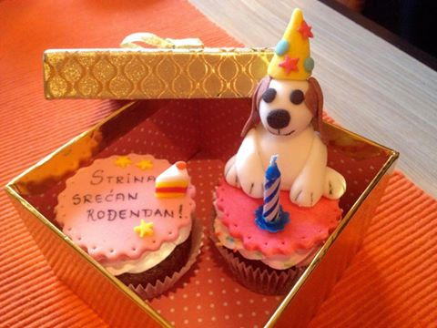

Cene kolača
*900 din/kg za sitne kolače
(bombice,štanglice,korpice,minjoni)
*Mafini - 200 dinara po komadu
Nešto o Mafinima
Reč "mafini" potiče ili od francuske reči moufflet' što znači mekani hleb ili od nemačke reči 'muffe' koja označava ime jedne vrste kolača. Postoje dve vrste mafina: engleski i američki. Ukoliko se pri izradi testa za mafine upotrebljava kvasac onda govorimo o engleskim mafinima, a ukoliko se upotrebljavaju hemijski preparati za podizanje testa, prašak za pecivo ili soda bikarbona onda govorimo o američkim mafinima. Mafine možemo najbolje opisati kao pecivo koje se po ukusu nalazi negde između hleba i kolača, s tim što u zavisnosti od tehnologije pripreme testa, mafini mogu više da liče na hleb ili više da liče na kolače. Manje šećera i putera u testu daće mafine koji više liče na hleb i obrnuto sa više šećera i više putera mafini će više ličiti na kolače.
Trikovi o kolačima!
*Ako pripremate voćnu pitu,testo pospite hlebnim mrvicama jer će one upiti viška soka koje voće ispušta tokom pečenja...
*Da Vam se ne bi smedji šećer zgrudvao,držite u posudi parče hleba...
Recept dana!
KOLAČ SA SIROM I VIŠNJAMA
Sastojci:
80 g šećera
120 g maslaca ili margarina
1 kašika slatke pavlake
700 g višanja
80 g šećera u prahu
200 g slatke pavlake
200 g brašna
1 paketić svetlog preliva za torte
Priprema:
Umesiti brašno,2 kašike šećera, maslac,1 kašiku slatke pavlake u čvrsto testo. Zamotati u foliju i ostaviti na hladnom jedan sat.
Zagrejati pećnicu na 190 stepeni i podmazati kalup.
Testo razvaljati po dnu kalupa i probosti ga na više mesta. Peći u pećnici 20tak minuta dok ne bude zlatno-smeđe boje.
Oprati višnje i očistiti od koštica. Prokuvati ih u 2,5 dl vode i 5 kašika šećera. Ocediti i sačuvati sok.
Izmešati sveži sir sa šećerom u prahu. Pavlaku umutiti dok ne postane čvrsta i pažljivo umešati. Time premazati podlogu od testa,
pri tome ne skidati okvir kalupa. Obložiti oceđenim višnjama.
Prema uputstvu na paketiću pripremiti preliv za torte, s ostatkom šećera i 2,5 dl soka od višanja i preliti kašikom preko višanja.
Kolač dana
Mafini
